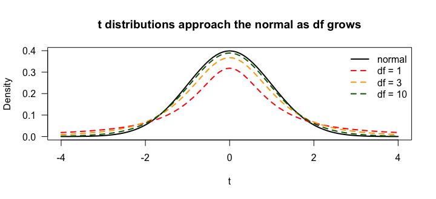
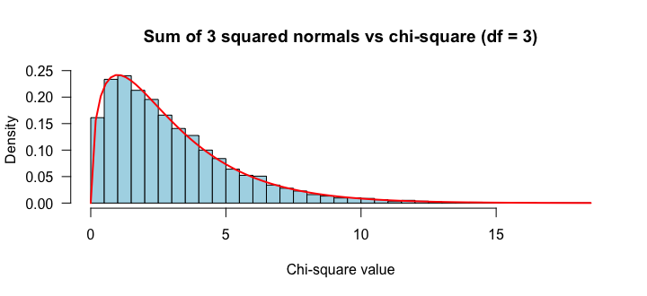
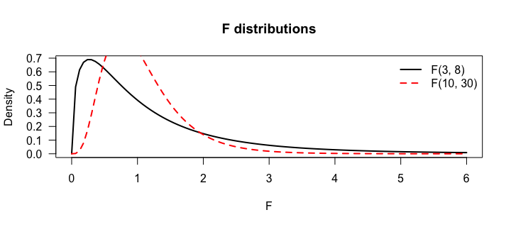

- ①② T Distributions
- ③ Chi-square Distributions
- ④ F Distribution
t 分布と自由度
標本から平均を推測するとき、ふつうは母標準偏差 σ がわかりません。そこで標本標準偏差 s で代用しますが、その分の不確かさを反映した分布が t 分布（スチューデントの t 分布）です。
標準正規分布と同じく連続・左右対称・平均 0 ですが、形を決める母数は自由度（df）の1つだけです。
curve(dnorm(x), from = -4, to = 4, lwd = 2, las = 1, ylab = "Density", xlab = "t", main = "t distributions approach the normal as df grows") cols <- c("red", "orange", "darkgreen") for (i in 1:3) curve(dt(x, df = c(1, 3, 10)[i]), add = TRUE, lwd = 2, lty = 2, col = cols[i]) legend("topright", c("normal", "df = 1", "df = 3", "df = 10"), lwd = 2, lty = c(1, 2, 2, 2), col = c("black", cols), bty = "n")

df が小さいほど山が低く、裾が重い（厚い）。df が大きくなるにつれて標準正規分布に近づきます。裾の重さは、右裾の面積で比べるとよくわかります。
round(c(df1 = pt(2, df = 1, lower.tail = FALSE), df3 = pt(2, df = 3, lower.tail = FALSE), df10 = pt(2, df = 10, lower.tail = FALSE), normal = pnorm(2, lower.tail = FALSE)), 4)
なぜ df = n − 1？
5つのデータの平均が 20 と決まっているとき、4つまでは自由に選べますが、最後の1つは自動的に決まります（合計が 100 になるように）。標本平均を計算に使ったぶん、自由に動ける値が1つ減る、これが n − 1 です。
known <- c(2, 5, 15, 60) 5 * 20 - sum(known) # the 5th value is forced
t の臨界値
t 分布は、平均（と回帰の傾き）の信頼区間や検定で、臨界値を求めるのに使います。たとえば標本サイズ 12 なら df = 11 で、97.5 パーセンタイル（両側 95% の境目）は：
qt(0.975, df = 11) qnorm(0.975) qt(0.975, df = c(5, 30, 100, 1000))
t の臨界値（2.201）は z の臨界値（1.960）より大きい。裾が重いぶん、同じ 95% を確保するには遠くまで取る必要があるからです。df が増えると 1.96 に近づきます。
pt()（確率）と qt()（臨界値）を使います。rt()（乱数）や dt()（ちょうどの密度）はグラフやシミュレーション以外ではあまり使いません。M5 の t 検定・t 区間で本格的に登場します。χ²（カイ二乗）分布
標準正規分布の値を2乗して k 個足すと、自由度 k の χ² 分布になります（「平方和」が鍵）。シミュレーションで作ってみます。
set.seed(550) z1 <- rnorm(5000); z2 <- rnorm(5000); z3 <- rnorm(5000) chi3 <- z1^2 + z2^2 + z3^2 c(mean = mean(chi3), var = var(chi3)) hist(chi3, breaks = 50, freq = FALSE, col = "lightblue", las = 1, main = "Sum of 3 squared normals vs chi-square (df = 3)", xlab = "Chi-square value") curve(dchisq(x, df = 3), add = TRUE, lwd = 2, col = "red")

| χ² 分布の性質 | |
|---|---|
| 値 | 0 以上のみ（2乗の和だから） |
| 形 | 右に歪む。df が増えると対称に近づく |
| 平均と分散 | 平均 = df、分散 = 2 × df（上のシミュレーションでも約 3 と約 6） |
| 山の位置 | df − 2（df > 2 のとき） |
M5 の適合度検定・独立性検定で使います。たとえば、ある標本から χ² = 9.5（df = 4）が得られたとき、それ以上の値が出る確率は：
pchisq(9.5, df = 4, lower.tail = FALSE) set.seed(1); mean(rchisq(10000, df = 4) >= 9.5) # simulation check
約 5% なので、偶然にしては「やや珍しい」値です（詳しい判断は M4・M5 の仮説検定で）。
F 分布
F 分布は、2つの χ²（それぞれ自由度で割ったもの）の比です。そのため自由度を2つ持ちます：分子の df₁ と分母の df₂。連続・単峰・右に歪む・0 以上・面積 1です。
curve(df(x, df1 = 3, df2 = 8), from = 0, to = 6, lwd = 2, las = 1, xlab = "F", ylab = "Density", main = "F distributions") curve(df(x, df1 = 10, df2 = 30), add = TRUE, lwd = 2, lty = 2, col = "red") legend("topright", c("F(3, 8)", "F(10, 30)"), lwd = 2, lty = c(1, 2), col = c("black", "red"), bty = "n")

M5 の ANOVA（分散分析）では、F 値が大きいほど「グループ間の差が偶然では説明しにくい」ことを意味します。F(3, 8) で F = 4.5 以上が出る確率は：
pf(4.5, df1 = 3, df2 = 8, lower.tail = FALSE) set.seed(120); round(rf(10, df1 = 3, df2 = 8), 2)
出典: R4DS Ch.5 Exploratory Data Analysis（内容を要約・日本語で再構成）
（1）df = 20 の t 分布で、t が 2.5 より大きい確率。（2）df = 2 の χ² 分布で 6 以上の確率。（3）F(2, 27) で 3.35 以上の確率。
pt(2.5, df = 20, lower.tail = FALSE) pchisq(6, df = 2, lower.tail = FALSE) pf(3.35, df1 = 2, df2 = 27, lower.tail = FALSE)
（1）約 0.011、（2）約 0.050、（3）約 0.050。どれも右側の面積なので lower.tail = FALSE。